i-ROP Personnel
Coordinating Center
| Michael F. Chiang, M.D. Study Principal Investigor chiangm@ohsu.edu  |
Oregon Health & Science University | |
| 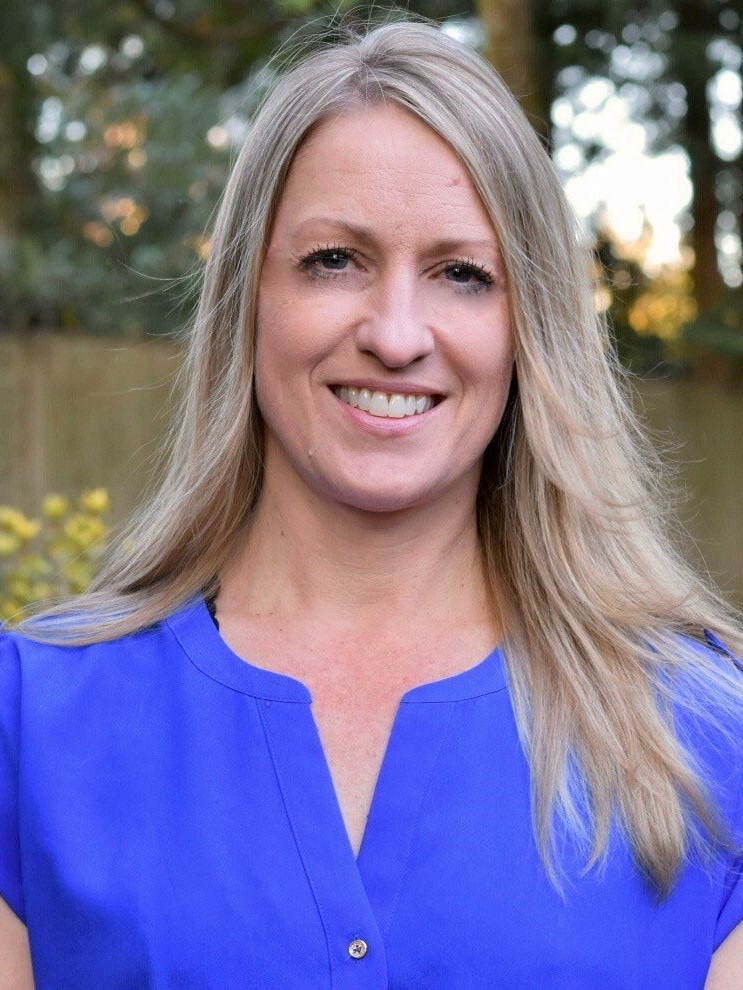 | Susan Ostmo, MS Lead Coordinator ostmo@ohsu.edu |
Oregon Health & Science University |
Site Principal Investigators
 |
Audina Berrocal, MD | Faculty, University of Miami |
 |
R.V. Paul Chan, MD, FACS rvpchan@uic.edu |
Faculty, University of Illinois at Chicago |
 |
Kimberly Drenser, MD, PhD | Faculty, William Beaumont Hospital |
| 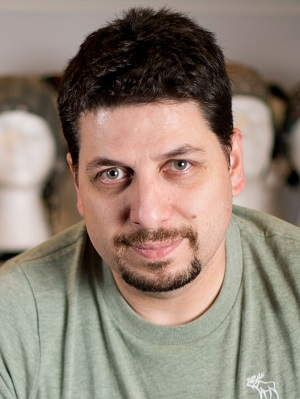 | Deniz Erdogmus, PhD | Faculty, Northeastern University |
| 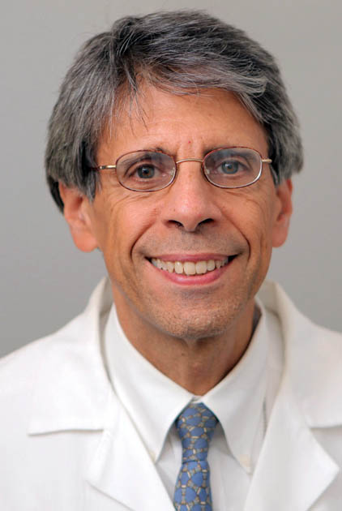 | Jason Horowitz, MD | Faculty, Columbia Unviersity |
 |
Jayashree Kalpathy-Cramer, PhD | Faculty, Massachesetts General Hospital |
 |
Thomas Lee, MD | Faculty, Children's Hospital Los Angeles |
 |
Maria Ana Martinez-Castellanos, MD | Faculty, Asociacion para Evitarla Ceguera, Mexico City |
| 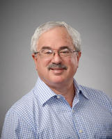 | Jerome Rotter, MD | Faculty, Los Angeles Biomedical Research Institute |
| 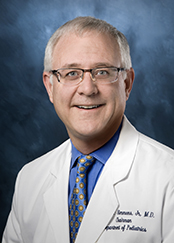 | Charles Simmons, MD | Faculty, Cedars-Sinai Medical Center |
| 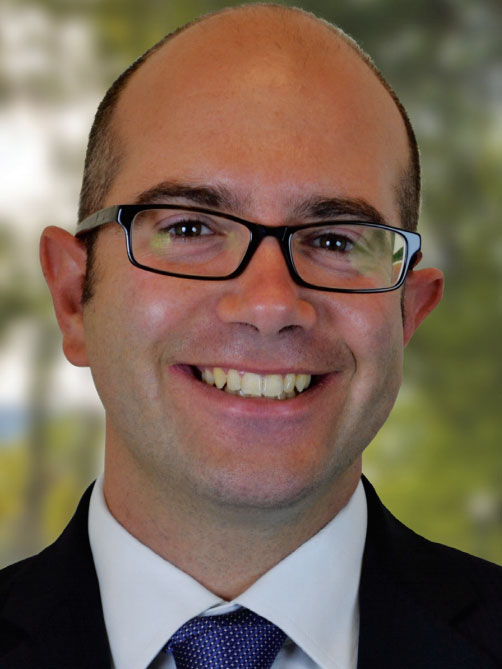 | Stratis Ioannidis, PhD | Faculty, Northeastern University |
 |
Peter Campbell, MD, MPH | Faculty, Oregon Health & Science University |
Current Personnel
 |
Andrew Beers, PhD | Research Staff, Massachusetts General Hospital |
| 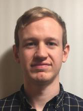 | James Brown, PhD | Research Fellow, Massachusetts General Hospital |
 |
Ken Chang | Graduate Student, Massachusetts General Hospital |
| Ida Chen, PhD | Faculty, Los Angeles Biomedical Research Institute | |
| 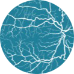 | Osode Coki, RN | Staff, Columbia University |
 |
Aaron Coyner | PhD Student, Oregon Health & Science University |
 |
Carlos M. Dulanto-Reinoso, MD | Fellow, Asociacion para Evitarla Ceguera, Mexico City |
 |
Sharon Galvis, NNP | Staff, Cedars-Sinai Medical Center |
 |
Yuan Guo, PhD student | Faculty, Northeastern University |
 |
Sang Jin Kim, MD, PhD | Visiting Researcher, Oregon Health & Science University |
| Kai Kang, MD | Resident, University of Illinois at Chicago | |
| Xiaohui Li, PhD | Faculty, Los Angeles Biomedical Research Institute | |
| 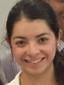 | Miroslava Meraz-Gutierrez, MD | Fellow, Asociacion para Evitarla Ceguera, Mexico City |
 |
Chace Moleta, MS | Medical Student, Oregon Health & Science University |
| 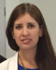 | Cristina Montero-Mendoza, MD | Fellow, Asociacion para Evitarla Ceguera, Mexico City |
| 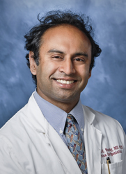 | Raghu Murthy, MD | Faculty Collaborator, Cedars-Sinai Medical Center |
 |
Catherin Negron, BA | Staff, University of Miami |
| 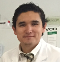 | Francisco Olguin-Manriquez, MD | Fellow, Asociacion para Evitarla Ceguera, Mexico City |
 |
Kaye Roll, RN | Staff, Los Angeles Biomedical Research Institute |
 |
Leora Pinto, RN | Staff, Columbia University |
 |
Kemal Sonmez, PhD | Faculty, Oregon Health & Science University |
| Ryan Swan | PhD Student, Oregon Health & Science University | |
| 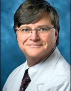 | Kent Taylor, PhD | Faculty, Los Angeles Biomedical Research Institute |
| Peng Tian, BS | Student, Northeastern University | |
| Veysi Yildiz | Student, Northeastern University | |
| Mary Zajechowski, RN | Staff, William Beaumont Hospital |
Past Personnel
 |
Hilal Biten, MD | Visiting Ophthalmologist, Turkey |
 |
Amparo Alonso-Betanzos, PhD | Visiting Scholar, Universidade da Coruna, Spain |
 |
Andrea Arriola, MD | Fellow, Asociacion para Evitarla Ceguera, Mexico City |
 |
Esra Ataer-Cansizoglu, MS | PhD Student, Northeastern University |
| 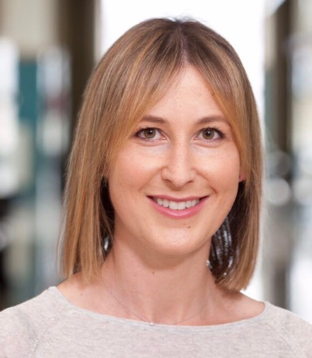 | Veronica Bolon-Canedo | Visiting Student, Universidade da Coruna, Spain |
| Tammy Check, RN | Staff, William Beaumont Hospital | |
 |
Bekir Dizdaroglu | Visiting Scholar, Northeastern University |
| Cheryl-Ann Eccles, RN | Staff, Columbia University | |
| Oscar Fontenla-Romero, PhD | Visiting Scholar, Universidade da Coruna, Spain | |
 |
Mrinali Gupta, MD | Faculty, Weill Cornell Medical College |
| Nina Hewing, MD | Postdoc, Columbia University and Weill Cornell Medical College | |
| 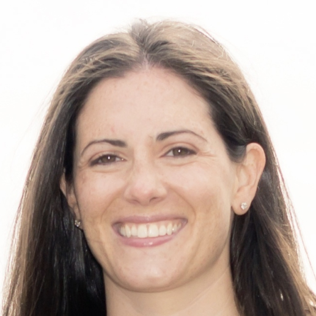 | Karyn Jonas, RN | Staff, University of Illinois at Chicago |
| Katie Keck | Medical Student, Oregon Health & Science University | |
| 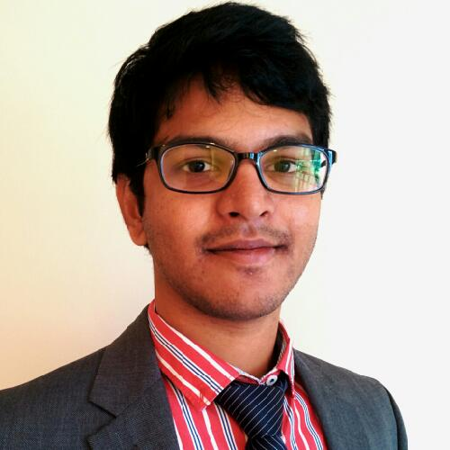 | Dharanish Kedarisetti, MSc | PhD Student, Northeastern University |
 |
Michael Klufas, MD | Fellow, Weill Cornell Medical College |
 |
Evan Krueger | Staff, Children's Hospital Los Angeles |
 |
Kaythyn McGoven, MPH | Staff, Children's Hospital Los Angeles |
 |
Anton Orlin, MD | Faculty, Weill Cornell Medical College |
| Tammy Osentoski, RN | Staff, William Beaumont Hospital | |
 |
Samir Patel | Medical Student, Weill Cornell Medical College |
 |
Alexander Port | Medical Student, Weill Cornell Medical College |
 |
Rohini Rao | Medical Student, Columbia University |
 |
Rafael Romero, MD | Fellow, Asociacion para Evitarla Ceguera, Mexico City |
| Michael Ryan | Medical Student, Oregon Health & Science University | |
| 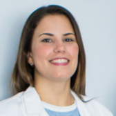 | Samantha Salinas-Longoria, MD | Fellow, Asociacion para Evitarla Ceguera, Mexico City |
 |
Steven Williams, MD | Medical Student, Columbia University |
 |
Ryan Wong, MD | Medical Student, Weill Cornell Medical College |